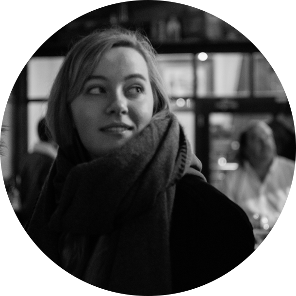

about
Hello, I’m Jasmijn. I’m a 21 year old The Hague based design student, currently in my second year. On this page you will find projects I did for school and in my free time. Other than creating stuff I love listening to music, going to concerts and drinking beers with my friends.
ixd & technology
For Interaction Design & Technology I made a responsive clock that changes it’s looks based on the current time. Github


used tools
Illustrator - HTML - CSS - Javascript - Tweenmax
I.T.'s Alive
During the Human Computer Interaction Technologies course, one of the things we learned was to work with Arduino, Unity and Processing. In two weeks me and my groupmates made an interactive project. The end result was a moving, zombie werewolf hand. In my portfolio for the course you can read more about my experiences with HCI.
used tools
HTML - CSS - Arduino - Photoshop
kwf x overblijf
Me and my teammates mad a fictional online campaign for the Dutch Cancer Society. We came up with a monthly after school get-together named 'De Overblijf'. The goal of this campaign is to gain more young volunteers.
used tools
Illustrator - Photoshop
Companion
For a friend I made a very simple prototype and logo. It shows the basics of an app made to help elderly people. Clickable prototype
used tools
Adobe XD - Illustrator - Photoshop
koenst
For Interaction Design & Technology I made a responsive clock that changes it’s looks based on the current time. Github
used tools
Illustrator - HTML - CSS - Javascript - Tweenmax